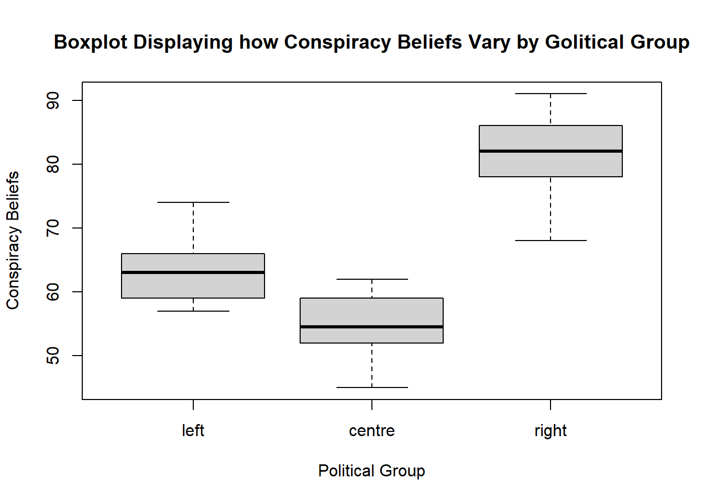
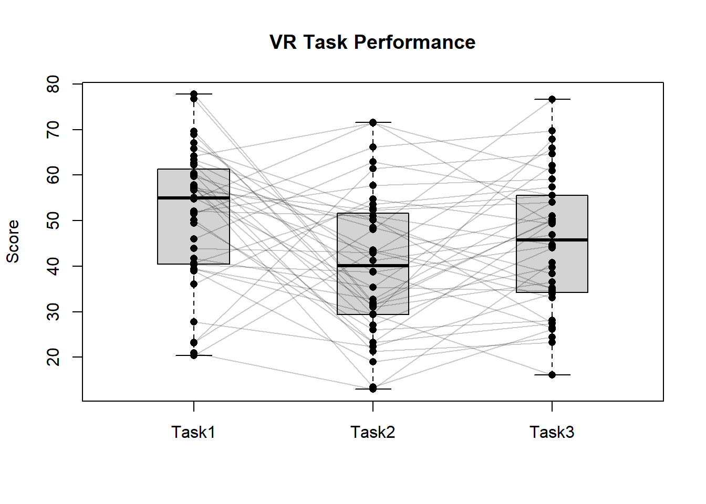
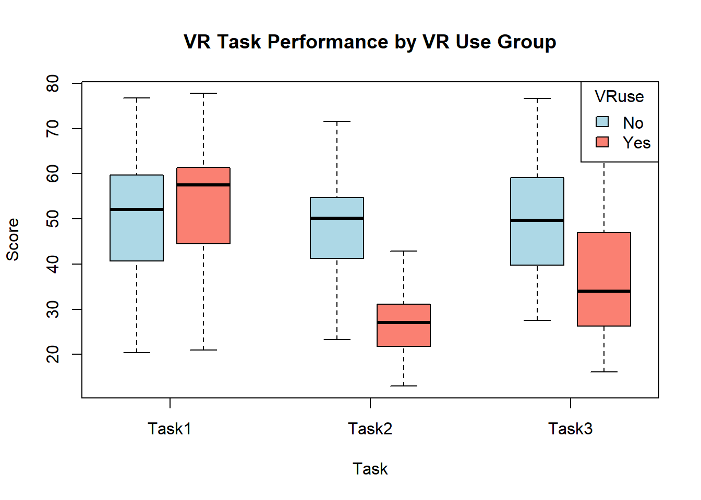

1 + 1[1] 2This document was built using Quarto. Quarto enables you to weave together content and executable code into a finished document. To learn more about Quarto see https://quarto.org.
Below is a snippit of R code that is executed when the document is created.
1 + 1[1] 2You can copy these code snippits into your own RStudio to begin to build you own analyses. As you go through the document create a new R script in RStudio and add the code section one after another. By then of this each section you will have built an analysis pipeline for each type of design. You can then use this as a basis for future analyses.
The first data set we are going to work with, is from a study that looked at the level of conspiracy beliefs (scored from a questionnaire) and the political ideology of the 30 participants which was categorised into 3 levels based on the party they voted for in the last election.
Before we load the data what is a good practice to do to our R Environment? What is the code to do this?
Clear it of variables that might be left over from a previous analysis. rm(list = ls()) Make sure to include this code in your analysis script as it will be executed invisibly in this document.
Following the pattern seen in previous tutorials we will load the .csv file and check some basic things about it.
df <- read.csv("https://raw.githubusercontent.com/vrNeuro/R_Teaching_Materials/refs/heads/main/Presessional/PoliticalData.csv")
head(df) #display the top 6 rows political_group conspiracy_beliefs
1 1 72
2 1 64
3 1 74
4 1 66
5 1 59
6 1 63summary(df) political_group conspiracy_beliefs
Min. :1 Min. :45.00
1st Qu.:1 1st Qu.:57.25
Median :2 Median :63.00
Mean :2 Mean :66.63
3rd Qu.:3 3rd Qu.:77.75
Max. :3 Max. :91.00
NA's :71 NA's :71 sapply(df,class) political_group conspiracy_beliefs
"integer" "numeric" The first thing to notice is that currently df$political_group is stored as integer data, this means it is made up of whole numbers. As we have done previously we need to tell R that this is categorical data, but this time we are also going to give these levels of the categorical variable labels. The way the current numbers map onto the labels for the levels is: 1 - left
2 - centre
3 - right
#change the political group to a factor with the correct labels
df$political_group <- factor(df$political_group,
levels = c(1, 2, 3),
labels = c("left", "centre", "right"))
#check that it has been properly configured using
summary(df$political_group) left centre right NA's
10 10 10 71 So something looks right, we have correctly changed the df$political_group to a factor and the labels appear when we ask for a summary. However, there are 71 NA, this is what R uses to represent missing data. This suggests that we have a lot of rows of our dataframe that contain these NA values for some reason in the political_group column.
Let’s try and see if we can understand what might have happened. We can use the function is.na() to find the location of all of these NA values, this will return TRUE whenever that bit of data is NA and FALSE when it is anything else. In tutorial 3 we saw how we could use these LOGICAL values to select rows from a dataframe, we can do the same here to get the content of all rows in which df$political_group is NA.
df[is.na(df$political_group),] political_group conspiracy_beliefs
31 <NA> NA
32 <NA> NA
33 <NA> NA
34 <NA> NA
35 <NA> NA
36 <NA> NA
37 <NA> NA
38 <NA> NA
39 <NA> NA
40 <NA> NA
41 <NA> NA
42 <NA> NA
43 <NA> NA
44 <NA> NA
45 <NA> NA
46 <NA> NA
47 <NA> NA
48 <NA> NA
49 <NA> NA
50 <NA> NA
51 <NA> NA
52 <NA> NA
53 <NA> NA
54 <NA> NA
55 <NA> NA
56 <NA> NA
57 <NA> NA
58 <NA> NA
59 <NA> NA
60 <NA> NA
61 <NA> NA
62 <NA> NA
63 <NA> NA
64 <NA> NA
65 <NA> NA
66 <NA> NA
67 <NA> NA
68 <NA> NA
69 <NA> NA
70 <NA> NA
71 <NA> NA
72 <NA> NA
73 <NA> NA
74 <NA> NA
75 <NA> NA
76 <NA> NA
77 <NA> NA
78 <NA> NA
79 <NA> NA
80 <NA> NA
81 <NA> NA
82 <NA> NA
83 <NA> NA
84 <NA> NA
85 <NA> NA
86 <NA> NA
87 <NA> NA
88 <NA> NA
89 <NA> NA
90 <NA> NA
91 <NA> NA
92 <NA> NA
93 <NA> NA
94 <NA> NA
95 <NA> NA
96 <NA> NA
97 <NA> NA
98 <NA> NA
99 <NA> NA
100 <NA> NA
101 <NA> NAFrom this we can see that all the value in the df$conspiracy_beliefs is also NA for these rows so they just seem to be completely missing data. Therefore we want to remove these rows of data completely from our data set. There are multiple ways of doing this in R, for example df <- na.omit(df) would remove any row in which a NA appeared in any column. This can be useful for removing rows when you have multiple columns that NAs can appear in. However, here we are going to do something slightly different. Previously we have used the == operator to test if something is equivalent to something else. The opposite of this is x != y, this which returns TRUE if x does not equal y.
Therefore this code tell R to overwrite the dataframe df with the data from df, in rows only where df$political_group is not NA.
df <- df[!is.na(df$political_group), ]
summary(df$political_group) left centre right
10 10 10 We can now see from the summary that we only have the 30 rows of ‘good’ data left in df.
Our research hypothesis is that a participants political group will affect their level belief in conspiracy theories. We have data with one categorical independent variable or IV, with three levels, and we have data with one dependent variable or DV which is continuous data. Our data is also independent with each participant appearing only once. So the analysis we want to conduct is a one-way ANOVA, in this case a 1x3 ANOVA, since we have three levels to our IV.
The easiest way to perform ANOVAs (and more complex analyses like regressions) in R is to use formula objects. What is the symbol we use in a formula in R to separate the DVs from the IVs, and to which side of this symbol do we place our DVs?
We use the tilde symbol ~ The DVs go on the left of this and the IVs on the right
The full name of an ANOVA is ANanlysis Of VAriance, and in R the function to perform this analysis is called aov().
polFormula <- conspiracy_beliefs ~ political_group #define the formula
anovaMdl <- aov(polFormula, data = df) #perform the ANOVA and assign the results to a variable
anovaMdl #print the contents of the model to the screenCall:
aov(formula = polFormula, data = df)
Terms:
political_group Residuals
Sum of Squares 3774.067 928.900
Deg. of Freedom 2 27
Residual standard error: 5.865467
Estimated effects may be unbalancedWe can see that the anovaMdl object printed some useful results to screen but we can improve on this and get more information by using the summary() function to print a summary of it for us. We have previously used this function to summarise the contents of a dataframe but it can also be used to summarise the contents of other objects such as the outputs of statistics functions.
summary(anovaMdl) Df Sum Sq Mean Sq F value Pr(>F)
political_group 2 3774 1887.0 54.85 3.09e-10 ***
Residuals 27 929 34.4
---
Signif. codes: 0 '***' 0.001 '**' 0.01 '*' 0.05 '.' 0.1 ' ' 1This table now contains all of the information we would need to report this statistical test in a paper or report. Similarly to when we looked at the output of the t-tests, it is a question of learning where we get the different bits of information from in the output.
A one-way ANOVA revealed a significant effect of political group on conspiracy beliefs, F(2, 27) = 54.85, p < .001.
However, we are not finished yet. The ANOVA results tell us that there is a statistically significant effect of political_group on conspiracy_beliefs but not which groups actually differ from each other. For this we need to conduct post-hoc tests, which compare each group against the others in pairs. They also apply correction for multiple-comparisons. The most commonly use post-hoc comparison test in psychology is Tukey’s Honest Significant Difference method, and is inculded in base R with the function TukeyHSD(). As we can see below it takes the output of the aov() function as its input, it then outputs a table of the pairwise comparisons. Below we are also creating a boxplot using the formula we defined earlier.
boxplot(polFormula, df, xlab = "Political Group", ylab = "Conspiracy Beliefs", main = "Boxplot Displaying how Conspiracy Beliefs Vary by Golitical Group")
TukeyHSD(anovaMdl) Tukey multiple comparisons of means
95% family-wise confidence level
Fit: aov(formula = polFormula, data = df)
$political_group
diff lwr upr p adj
centre-left -9.1 -15.6038 -2.596198 0.0048702
right-left 17.9 11.3962 24.403802 0.0000007
right-centre 27.0 20.4962 33.503802 0.0000000Here the left column of each row of the table is the comparison performed, for example the first is comparing the centre to the left group. The diff column is the difference in means, here is is negative as centre is less than left as can be seen in the boxplot and the sum is performed centre-left. The final column is the adjusted p value for this test (after correction for multiple comparisons) and we can see it is significant.
It is always a good idea to check that your statistics make sense given a plot of your data, and when reporting them make clear which direction the effects are in, not just if they were signficant or not.
So we would add this information to our earlier write up of the overall ANOVA results to give a full report:
A one-way ANOVA revealed a significant effect of political group on conspiracy beliefs, F(2, 27) = 54.85, p < .001. Post hoc comparisons using the Tukey HSD test indicated that conspiracy beliefs were significantly lower in the centre group than in the left group (Mdiff = −9.10, p = .005). Conspiracy beliefs were significantly higher in the right group than in the left group (Mdiff = 17.90, p < .001), and significantly higher in the right group than in the centre group (Mdiff = 27.00, p < .001). All three pairwise comparisons were therefore statistically significant, indicating that each political group differed significantly from the other two on conspiracy beliefs.
The data we will look at for the next section will be from an experiment that investigated the performance of participants on three different spatial memory tasks, with each participant completing all three tasks. The experiment also recorded whether the participants were regular usersof virtual reality devices as well as the number of hours they spent each week playing computer games.
As usual we will clear the Environment of variables and load the csv file:
rm(list = ls())
df <- read.csv("https://raw.githubusercontent.com/vrNeuro/R_Teaching_Materials/refs/heads/main/Presessional/VRTaskData.csv")
head(df) #display the top 6 rows VRuse gameHours Task1 Task2 Task3
1 2 5 57.00772 42.83350 51.07771
2 1 7 57.10089 23.26025 49.66249
3 2 5 60.10248 21.32076 23.30864
4 1 10 20.33102 43.21899 33.03326
5 1 7 55.13143 35.33398 34.54462
6 2 0 20.92061 12.97497 40.82358summary(df) VRuse gameHours Task1 Task2
Min. :1.000 Min. : 0.000 Min. :20.33 Min. :12.97
1st Qu.:1.000 1st Qu.: 4.000 1st Qu.:40.54 1st Qu.:29.45
Median :1.000 Median : 7.500 Median :54.96 Median :40.04
Mean :1.375 Mean : 7.275 Mean :51.21 Mean :40.52
3rd Qu.:2.000 3rd Qu.:11.000 3rd Qu.:60.80 3rd Qu.:51.32
Max. :2.000 Max. :15.000 Max. :77.75 Max. :71.57
Task3
Min. :16.08
1st Qu.:34.39
Median :45.79
Mean :45.26
3rd Qu.:55.50
Max. :76.67 sapply(df,class) VRuse gameHours Task1 Task2 Task3
"integer" "integer" "numeric" "numeric" "numeric" As before we will need to properly code the df$VRuse variable as a categorical variable, in this case it is coded so that a 1 indicates that they did not use VR regularly and a 2 if they did
df$VRuse <- factor(df$VRuse, levels = c(1,2), labels = c("No","Yes"))This data set contains two separate IVs, the first is the within subject IV of task (with 3 levels), the second is the between subject IV of VRuse (with two levels). Each participant took part in all three tasks but is only a member of one of the levels of the between subject IV.
For now we are going to concentrate on just the within subject IV of task. As we saw in tutorial 1, we sometimes need to reshape our data in order for it to be in the right format for R to analyse. Although in many statistical packages such as SPSS and Jamovi we tend to organise our data with one row per participant, many functions in R require one row per observation. Just as before we are going to use the tidyr package and it’s useful pivot functions to accomplish this. Before we reshape the table we are also going to add a new variable to it called Subject, this is because we need some way to track which bits of data belong to which subject when performing the ANOVA. This ‘Subject’ code will simply be based on the row number in df.
df$Subject <- factor(seq_len(nrow(df))) # add the row number as a new factor variable
dim(df) #first check the dimensions of our current dataframe[1] 40 6library(tidyr) #load the package
#create a long format table
dfLong <- pivot_longer(df, cols = starts_with("Task"), names_to = "Task", values_to = "Score")
dim(dfLong) #check the dimensions of our new long dataframe[1] 120 5head(dfLong)# A tibble: 6 × 5
VRuse gameHours Subject Task Score
<fct> <int> <fct> <chr> <dbl>
1 Yes 5 1 Task1 57.0
2 Yes 5 1 Task2 42.8
3 Yes 5 1 Task3 51.1
4 No 7 2 Task1 57.1
5 No 7 2 Task2 23.3
6 No 7 2 Task3 49.7We can see that we started with 40 rows of 6 variables (including our new Subject variable). The new dfLong is 120 rows of 5 variables. It has taken the 3 columns that started with the name ‘Task’ and created a new variable called dfLong$Task that indicates which column the df$Score came from. It has left out gameHours variable intact, but since each participant now has three rows the same value is repeated three times.
The last thing we need to do is to recode our new dfLong$Task variable as a factor.
dfLong$Task <- factor(dfLong$Task, levels = c("Task1", "Task2", "Task3"))
head(dfLong) #check it has worked# A tibble: 6 × 5
VRuse gameHours Subject Task Score
<fct> <int> <fct> <fct> <dbl>
1 Yes 5 1 Task1 57.0
2 Yes 5 1 Task2 42.8
3 Yes 5 1 Task3 51.1
4 No 7 2 Task1 57.1
5 No 7 2 Task2 23.3
6 No 7 2 Task3 49.7We are now ready to perform our 1-way repeated measures ANOVA. This is very similar to how we performed the one-way between subjects ANOVA. However, we need to specify the error term so that the within subjects factor is accounted for. We will discuss this more during the main statistics course.
# run the within-subjects (repeated measures) one-way ANOVA
rmAnova <- aov(Score ~ Task + Error(Subject/Task), data = dfLong)
summary(rmAnova)
Error: Subject
Df Sum Sq Mean Sq F value Pr(>F)
Residuals 39 10366 265.8
Error: Subject:Task
Df Sum Sq Mean Sq F value Pr(>F)
Task 2 2296 1147.9 5.623 0.00523 **
Residuals 78 15922 204.1
---
Signif. codes: 0 '***' 0.001 '**' 0.01 '*' 0.05 '.' 0.1 ' ' 1To report and interpret these results we would look at the table below the “Error: Subject:Task” line. We could write this up as:
A one-way repeated measures ANOVA showed that task significantly affected performance scores, F(2, 78) = 5.62, p = .005.
As with the between subjects ANOVA we want to perform post-hoc comparisons to see where the difference lies. Happily R has a function exactly for this that will also apply adjustments for multiple comparisons, here I have selected a bonferroni correction but other methods can be selected using the function:
pairwise.t.test(dfLong$Score, dfLong$Task, paired = TRUE, p.adjust.method = "bonferroni")
Pairwise comparisons using paired t tests
data: dfLong$Score and dfLong$Task
Task1 Task2
Task2 0.0088 -
Task3 0.3592 0.1378
P value adjustment method: bonferroni This demonstrates that only Task1 and Task2 were significantly difference after a bonferroni correction for multiple comparisions with p = 0.009. We can find p value for the Task1 - Task3 comparison in the bottom left of the grid (p = 0.359), and Task2 - Task3 p = 0.138.
To create a boxplot to visualise this we can either do this from the long format data in dfLong or the original wide format data in df. The code below shows the version from the original df format as it is slightly simpler:
boxplot(df[, c("Task1", "Task2", "Task3")],
main = "VR Task Performance", ylab = "Score",
boxwex = 0.4)
# connect each subject's three scores with a line
for (i in 1:nrow(df)) {
lines(x = 1:3, y = as.numeric(df[i, c("Task1", "Task2", "Task3")]),
col = rgb(0, 0, 0, 0.2))
}
# overlay the individual points on top of the lines
points(rep(1, nrow(df)), df$Task1, pch = 16)
points(rep(2, nrow(df)), df$Task2, pch = 16)
points(rep(3, nrow(df)), df$Task3, pch = 16)
To complete a statistical report we should also include some descriptive statistics
summary(df[,3:5]) Task1 Task2 Task3
Min. :20.33 Min. :12.97 Min. :16.08
1st Qu.:40.54 1st Qu.:29.45 1st Qu.:34.39
Median :54.96 Median :40.04 Median :45.79
Mean :51.21 Mean :40.52 Mean :45.26
3rd Qu.:60.80 3rd Qu.:51.32 3rd Qu.:55.50
Max. :77.75 Max. :71.57 Max. :76.67 sapply(df[,3:5],sd) Task1 Task2 Task3
14.83106 15.39747 14.73167 A full writeup of these results would be something like this:
A one-way repeated measures ANOVA was conducted to examine the effect of task on performance scores. Descriptive statistics showed that mean scores were highest for Task 1 (M = 51.21, SD = 14.83), followed by Task 3 (M = 45.26, SD = 14.73) and Task 2 (M = 40.52, SD = 15.40). The effect of task was statistically significant (F(2, 78) = 5.62, p = .005). Post hoc pairwise comparisons using paired-samples t-tests with Bonferroni correction indicated that scores were significantly higher on Task 1 than on Task 2 (p = .009). Neither the comparison between Task 1 and Task 3 (p = .359) nor between Task 2 and Task 3 (p = .138) reached statistical significance.
Finally we will use a new data set to look at a mixed ANOVA, now we will also include the between subjects factor of VRuse. We will continue with the same data set as the previous section so no need to clear the Environment. However, if you are starting from this section make sure to include the code that loads the initial data.
The code to perform this is very similar to our one-way within subjects ANOVA.
mixedAnova <- aov(Score ~ VRuse * Task + Error(Subject/Task), data = dfLong)
summary(mixedAnova)
Error: Subject
Df Sum Sq Mean Sq F value Pr(>F)
VRuse 1 3420 3420 18.71 0.000106 ***
Residuals 38 6947 183
---
Signif. codes: 0 '***' 0.001 '**' 0.01 '*' 0.05 '.' 0.1 ' ' 1
Error: Subject:Task
Df Sum Sq Mean Sq F value Pr(>F)
Task 2 2296 1147.9 6.822 0.001884 **
VRuse:Task 2 3135 1567.3 9.315 0.000241 ***
Residuals 76 12788 168.3
---
Signif. codes: 0 '***' 0.001 '**' 0.01 '*' 0.05 '.' 0.1 ' ' 1We have switched Task on the right side of the ~ to VRuse * Task, this is a shorthand way of asking R to calculate the main effect of VRuse, Task, and also their interaction term VRuse:Task. We could have used this formula Score ~ VRuse + Task + VRuse:Task + Error(Subject/Task) and produced identical results but the * shorthand is very useful to prevent a long list.
The output table above now has two additional lines: 1 - in the Error: Subject table we can now see a line for the main effect of VRuse 2 - in the Error: Subject:Task we now see an additional line for the interaction effect
Here is how we would write this up for a report or paper:
A 2 (VRuse) × 3 (Task) mixed ANOVA was conducted, with VRuse as a between-subjects factor and Task as a within-subjects factor. There was a significant main effect of VRuse, F(1, 38) = 18.71, p < .001, indicating that overall performance scores differed between VR-use groups. There was also a significant main effect of Task, F(2, 76) = 6.82, p = .002. There was also a significant VRuse × Task interaction, F(2, 76) = 9.32, p < .001, indicating that the effect of task on performance differed depending on VR-use group.
We can also produce a boxplot of this data to match the statistical test we have performed:
boxplot(Score ~ VRuse * Task, data = dfLong,
col = c("lightblue", "salmon"),
at = c(1, 2, 4, 5, 7, 8),
xaxt = "n",
xlab = "Task", ylab = "Score",
main = "VR Task Performance by VR Use Group")
axis(1, at = c(1.5, 4.5, 7.5), labels = c("Task1", "Task2", "Task3"))
legend("topright", legend = levels(dfLong$VRuse), fill = c("lightblue", "salmon"),
title = "VRuse")
The boxplot helps us see where our results come from: 1 - Main effect of VRuse: the Yes group is on average lower than the No across the three tasks 2 - Main effect of task: as before Task2 seems to be lower than task1 if averaged across both VR groups 3 - Interaction effect: the No group are relatively similar across the three tasks, but the No group show a change in performance across the tasks.